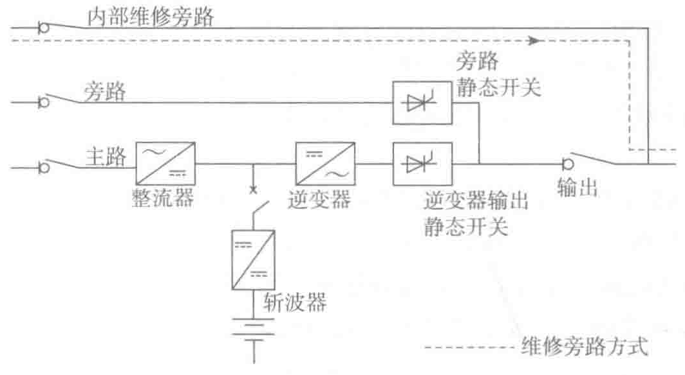

其他情况有可能会造成供电毫秒级中断。
只要旁路电源在允许范围内，UPS逆变器输出电压和频率与旁路同步，就可以进行自动或手动切换，供电是没有间断的。因为这两个电压是同相位的，静态开关可控硅（SCR）两端没有相位差，电压差此时几乎为零（可能存在电压幅值差，但不影响不间断切换），不会干扰负载切换到旁路供电。
当旁路电源不在允许范围内时，逆变器不同步且以自振频率自主运行，自动切换是不可靠的。然而，手动切换旁路电源供电还是能够强制进行的。此功能极大地提高了可靠性，因为旁路超限与旁路电源故障同时发生的可能性是非常小的。
为了旁路的正常运行，必须要确保旁路交流输入的上游保护装置（在主低压开关柜上的断路器）与UPS输出的负荷保护装置之间的选择性。当UPS过载或者输出故障时，旁路输入断路器与UPS输出断路器不至于同时跳闸，在一定程度上保障了负载供电的连续性。
（4）维修方式
维修旁路供电，如图3-7所示。

当UPS故障维修或者是大型维护时，在不间断负载运行的情况下进行维护是可行的，此时负载通过维修旁路由旁路电源供电。切换到维修旁路由一组手动开关实现，整流器、斩波器、逆变器和静态开关停止运行并且与电源隔离，电池通过电池的保护断路器也被隔离。这样，大大提高了UPS的可用性。此时，可以与自备柴油发电机组配合使用，以提高维修维护时的电源可控性与可靠性，达到负载不间断供电，又可以安全可靠地实现维修维护UPS组的目的。
3.1.2 工频UPS与高频UPS的区别
1. 工频UPS与高频UPS概念区别
工频UPS和高频UPS是按其设计电路的工作频率来区分的。工频UPS是以传统的模拟电路原理设计，由可控硅SCR整流器、IGBT逆变器、静态旁路和工频升压输出隔离变